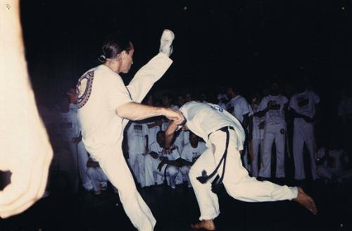

Каподайджест, №2 (22.05)
Спасибо всем, кто поддержал первый выпуск «Каподайджеста» своими комментариями, плюсиками и лайками. Это очень сильно мотивирует продолжать его выпуск.
Второй „Каподайджест“ почти полностью посвящён главной новости прошедшей недели — уходу из жизни местре Peixinho и его вкладу в современную капуэйру.
***
В этом выпуске:
— Умер один из родоначальников современной капуэйры Mestre Peixinho
— Новая встреча капуэйристов Movimento Novo состоится 28 мая в Рио
— В Москве в конце мая пройдёт цикл лекций по искусству Португалии
— Большая медиатека от Falar.ru
Умер один из родоначальников современной капуэйры Mestre Peixinho
Главной новостью прошедшей недели стало печальное известие о кончине великого мастера — Mestre Peixinho, основателя группы Senzala и одного из основоположников современной капуэйры. Весть о смерти мастера появилась в блогах и социальных профилях капуэйристов всего мира. Во многих группах «роды» (roda) были открыты ладаиньями в память о местре и песней «Capoeira esta de luto».
Местре Peixinho (Марсело Азеведо Гуймараэс) родился в 1947 году в г. Витории, штат Эспириту-Санту. Начал практиковать капоэйру в 1964 году, вступив в группу, которая с 1965 стала называться „Grupo Senzala“, и став, таким образом, одним из её основателей.
Peixinho принимал участие в турнире «Золотой беримбау» (1967-1969 гг.), давал уроки капоэйры в Федеральном Университете Рио-де-Жанейро с 1973 по 1980, в Университете штата Рио-де-Жанейро с 1979 по 1983. Принимал участие в выступлениях и шоу в городском театре (1971) и в концертном холле «Зала Сесилии Мейерлес» (1969), в Интернациональном Фестивале на Берегу Воссоединения (1977), в проекте Черно-белая Бразилия.
В 1987 г. состоялась первая летняя встреча Capoeira Summer Meeting, организованная Маркушем Чина (Marcos China) и группой Senzala в Париже. В ней приняли участие многие мастера из Бразилии, в том числе Peixinho, а также Toni Vargas, Garrincha, Sorrizo и другие. Так, в конце восьмидесятых годах прошлого века, на протяжении шести месяцев местре Peixinho являлся организатором первых европейских встреч по капоэйре, а с 1990 г. — первых скандинавских встреч.
В последнее время Peixinho являлся координатором большой группы учителей, преподающих в различных городах Бразилии, Европы и США.
Последние годы местре очень тяжело болел, как сообщают некоторые комментаторы в интернете, у него был рак. Марсело Азеведо Гуймараэс скончался 16 мая в Рио-де-Жанейро на 64-м году жизни и был похоронен 18 мая на кладбище „Cemitério São João Batista“ в Ботафого.

Сейчас о местре вспоминают и пишут многие известные капуэйристы. Так Местре Акордион и контра-местре Eurico почтили в своих блогах память Peixinho. А Ирина Тиховская из Киева пишет в своём ЖЖ: «…Вся современная капоэйра в целом многими своими аспектами тоже ему обязана. Школа, к которой он присоеденился буквально через год после её основания — в далеком 1964, настолько распространилась по миру, и настолько громко звучит сейчас её имя, что даже среди стилей капоэйры — наряду с анголой, режионалом и миудиньо — некоторые выделяют стиль сензала».
Вообще 2011 год стал очень тяжёлым для всего сообщества капуэйры в мире. За этот год сканчались многие мастера, живые легенды, которые стояли у истоков возрождённой капуэйры в ХХ веке. Так в этому году из жизни ушли местре Arthur Emídio и Bigodinho.
Новая встреча капуэйристов Movimento Novo состоится 28 мая в Рио
На интернет-видеоканале Abeiramar.TV был опубликован ролик с нарезкой лучших моментов прошлогодних род «Movimento Novo» и с анонсом новой встречи 28 мая 2011 года.
„Movimento Novo“ — это социо-культурное движение и ежегодное собрание, с целью обсудить вопросы, относящиеся к капоэйре и здоровью, основанное тремя талантливыми капуэйристами Jorge Itapuã, Lobisomem и Ferradura. Подробнее об этом писал Seth в посте «О Movimento Novo», а на сайте Capoeira.INside неоднократно публиковались видео с их род.
В Москве в конце мая пройдёт цикл лекций по искусству Португалии
Новость не совсем связана с капуэйрой и Бразилией, но может быть полезна изучающим португальский язык. 27-го мая начинается цикл лекций по искусству Португалии в Центре языка и культуры португалоговорящих стран.
Лекции читает Ольга Русинова, кандидат искусствоведения, преподаватель Европейского Университета в Санкт-Петербурге, приглашенный исследователь Университета Лиссабона. Автор ряда популярных и специальных статей по искусству Португалии и России, участник российских и международных конференций, организатор художественного проекта «Лиссабон-Петербург», член правления Ассоциации португалистов России. Дополнительная информация на portugalist.ru.
И ещё одна микро-новость в тему, пришедшая с Falar.ru: „общими усилиями сайта была собрана большая медиатека и мы с радостью поделимся ей. Отправляйте заявки на 320gb@falar.ru“.
Возможно вы пропустили
— Каподайджест, №1 (14.05)
— Впечатления от семинара с местре Кобра Манса от AnnyRoddick
— Статья об одесски капуэйристах «Капоэйра: бразильское единоборство на одесской земле»